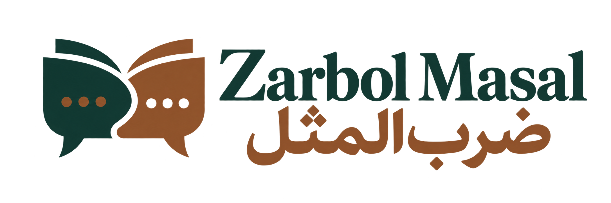
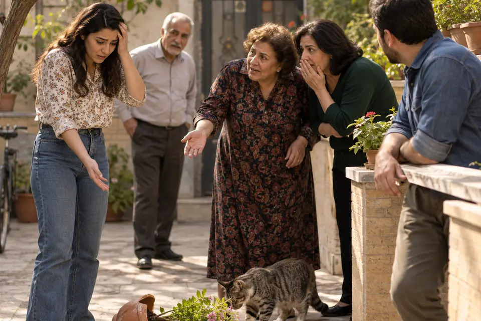
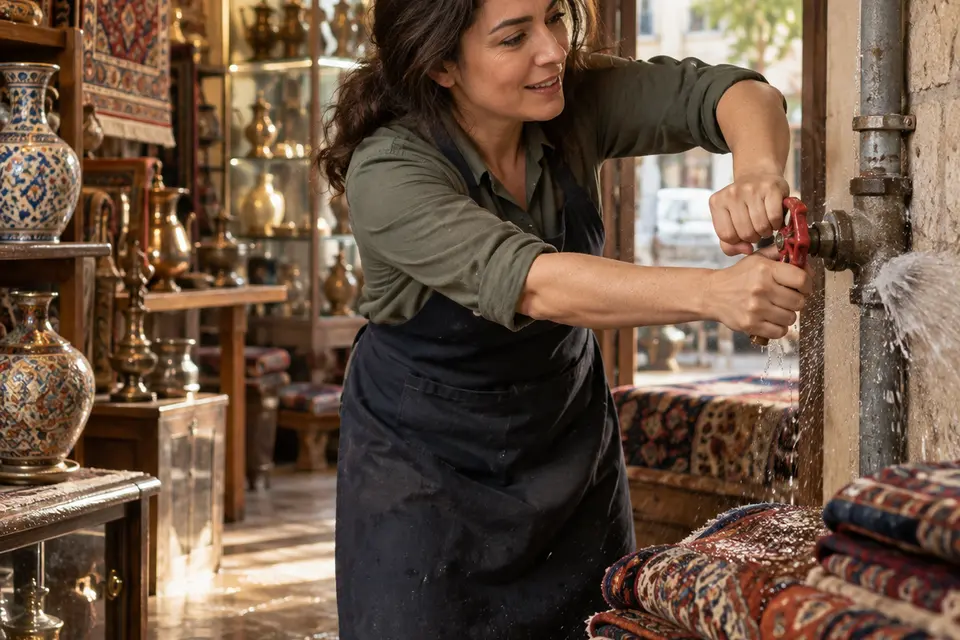

29
بنیآدم اعضای یکدیگرند
Einer für alle, alle für einen.
Menschen sind miteinander verbunden und sollten das Leid anderer nicht gleichgültig hinnehmen.

Persisch lernen · Sprichwörter verstehen
Entdecke Bedeutung, Aussprache und kulturell passende Entsprechungen. Hier siehst du die neuen Bilder für die Sprichwörter 29 bis 33.
بنیآدم اعضای یکدیگرند
Menschen sind miteinander verbunden und sollten das Leid anderer nicht gleichgültig hinnehmen.
تا نباشد چیزکی، مردم نگویند چیزها

Ein Gerücht kann einen Anlass haben, ist allein aber noch kein Beweis.
جلوی ضرر را از هر جا بگیری منفعت است

Auch eine verspätete Korrektur ist wertvoll, wenn sie weiteren Schaden verhindert.
جواب ابلهان خاموشی است
Auf törichte oder provozierende Worte reagiert man manchmal am klügsten gar nicht.
چراغی که به خانه رواست، به مسجد حرام است
Bevor man anderswo hilft, sollte man berechtigte Bedürfnisse der eigenen Familie berücksichtigen.
Kostenlose Lernprobe
Persische Originale, deutsche Aussprachehilfe, Bedeutung und Beispiele für den Alltag.